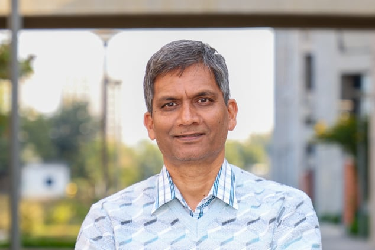
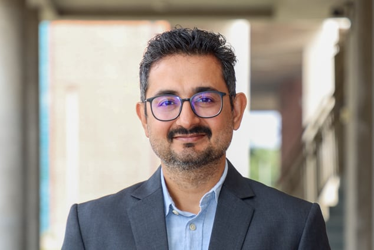
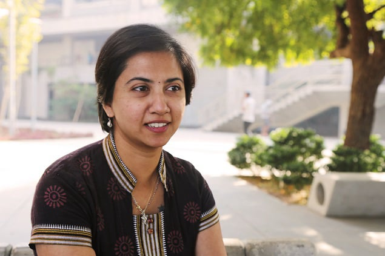
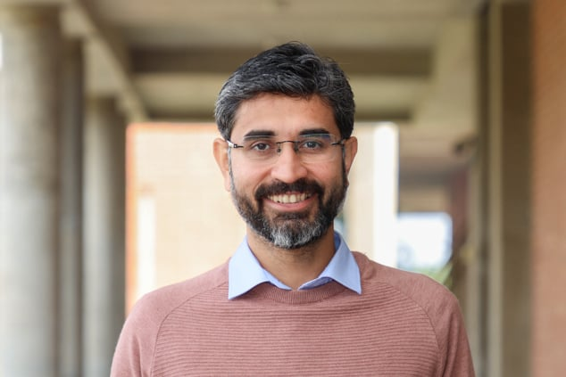
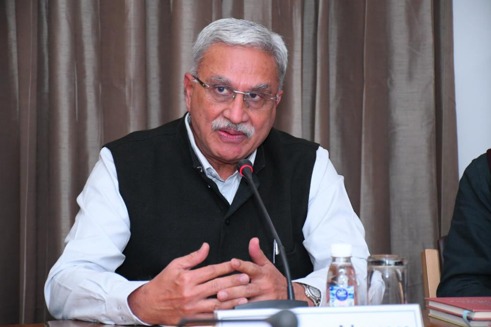

Prof. Vikrant Jain
Professor
Earth surface processes, River science, Fluvial geomorphology.
Faculty Profile →
Prof. V.N. Prabhakar
Professor
Archaeology of protohistorical India, Harappan civilization, Geoarchaeology.
Faculty Profile →

Prof. Pankaj Khanna
Associate Professor
Modern & fossil carbonates, Carbonate sedimentology, Reservoir architecture.
Faculty Profile →
Prof. Utsav Mannu
Assistant Professor
Evolution of accretionary wedges, Subduction geodynamics, Tectonic modeling.
Faculty Profile →

Prof. Sharada C. V.
Assistant Professor
Application of physical sciences in archaeology, Zooarchaeology, Isotope studies.
Faculty Profile →

Prof. Achyut Mishra
Assistant Professor
Geological reactive transport modeling, fluid-rock reaction simulations.
Faculty Profile →
Prof. Sonal Khanolkar
Assistant Professor
Micropaleontology, Biostratigraphy, Cenozoic Paleobiology.
Faculty Profile →
Prof. Manab Mukherjee
Assistant Professor
Experimental rock mechanics, Strain localization, Rock failure physics.
Faculty Profile →
Prof. Vimal Mishra
Professor
Surface water hydrology, Climate variability, Flood & drought forecasting.
Faculty Profile →
Prof. Udit Bhatia
Associate Professor
Physics-Guided Machine Learning for Urban Flooding & Infrastructure Resilience.
Faculty Profile →
Prof. C N Pandey
Professor of Practice
Geospatial mapping for mangrove restoration & Coastal ecosystem management.
Faculty Profile →
Prof. Prem Chand Pandey
Visiting Professor
Earth Observations from Satellites, Polar remote sensing.
Faculty Profile →
Prof. Rishi Narain Singh
Visiting Professor
Geophysical and environmental mathematical modeling.
Faculty Profile →
Prof. Sampat Kumar Tandon
Guest Professor
Sedimentology, Tectonics, River Science.
Faculty Profile →

Prof. Shailesh Nayak
Distinguished Honorary Professor
Oceanography, Geology, Coastal hazard remote sensing.
KP
Kartik Patel
M.Tech 2024-2026
Supervisor: Dr. Achyut Mishra — Subsurface transport & modeling.
SS
Sakshi Singh
M.Tech 2024-2026
Supervisor: Dr. Achyut Mishra — Fluid-rock reaction dynamics.
SM
Saharsh Mishra
M.Tech 2024-2026
Supervisor: Dr. Pankaj Khanna — Carbonate reservoir architecture.
KT
Ketan
M.Tech 2024-2026
Supervisor: Prof. Vimal Mishra — Hydrological modeling.
DE
Devanarayanan EM
M.Tech 2024-2026
Supervisor: Dr. Utsav Mannu — Geodynamics & tectonic modeling.
AJ
Anindita Jana
M.Tech 2024-2026
Supervisor: Dr. Utsav Mannu — Subduction zone mechanics.
SS
Shuvam .S
M.Tech 2025-2027
Earth System Science Postgraduate Scholar.
SN
Sourav Kumar Naik
M.Tech 2025-2027
Earth System Science Postgraduate Scholar.
VK
Vedang R Kawalkar
M.Tech 2025-2027
Earth System Science Postgraduate Scholar.
Hiren Solanki
PhD Scholar
Advisor: Prof. Vimal Mishra — Machine learning & climate hydrology. SARANSH 2025 Winner.
R. Valli Divya
PhD Scholar
Advisor: Prof. Vikrant Jain — Diamond anvil cell planetary mineralogy. Nature Reviews author.
AK
Ayush Kranti
PhD Scholar
Advisor: Dr. Achyut Mishra — Subsurface fluid transport modeling.
AK
Akhil
PhD Scholar
Advisor: Dr. Achyut Mishra — Reactive transport simulations.
TR
Trinanyan
PhD Scholar
Advisor: Dr. Achyut Mishra — Pore network physics.
SD
Subham Dutta
PhD Scholar
Advisor: Dr. Sonal Khanolkar — Cenozoic micropaleontology & microfossils.
SG
Sumit Ghosh
PhD Scholar
Advisor: Prof. Vikrant Jain — Fluvial geomorphology & river sediment budgets.
SS
Sumit Singh
PhD Scholar
Advisor: Dr. Utsav Mannu — Geodynamic subduction zone numerical modeling.
SK
Saikat
PhD Scholar
Advisor: Dr. Pankaj Khanna — Carbonate sedimentology.
DB
Debasmita
PhD Scholar
Advisor: Dr. Pankaj Khanna — Carbonate reservoir architecture.
JP
Mr. Jayesh R. Prajapati
Junior Lab Attendant
Department Laboratory Operations & Equipment Support.
AS
Mr. Ashutosh Shukla
Junior Lab Assistant
Geoscience Instrumentation & Sample Preparation Maintenance.